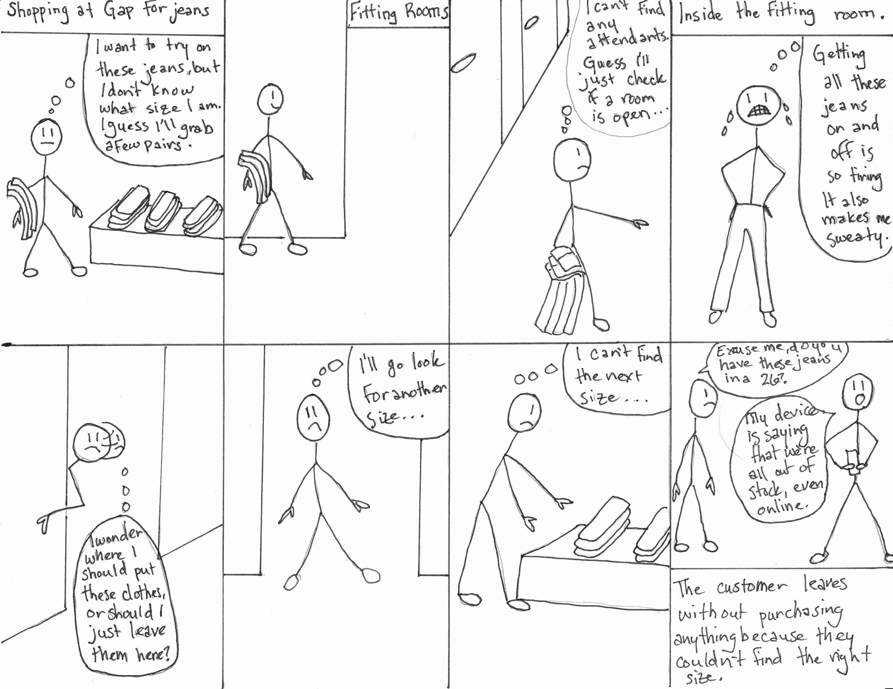
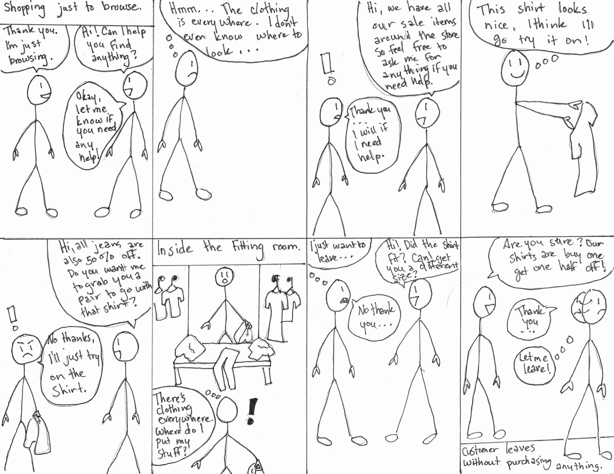

ZipFit
Helping improve the shopping and fitting room experience by making it faster, more convenient and efficient.
Role: Project Management, UX Research, UX Design, Prototyping

Helping improve the shopping and fitting room experience by making it faster, more convenient and efficient.
Role: Project Management, UX Research, UX Design, Prototyping
Market Research, Observations, Interviews, Surveys, Storyboards, Personas, Analysis
Paper Mockups, Wireframes, Prototypes
Feedback Sessions, Usability Testing, Cognitive Walkthroughs
ZipFit utilizes a tablet system that requires a revamp of the whole storefront layout and fitting room process.
We started out with specific stores within the Gap corporation umbrella that included Old Navy, Gap and Banana Republic. Through research, we realized that our final design would encompass and benefit NOT just the Gap brands, but similar stores across the retail platform. Therefore, we expanded our focus to incorporate general clothing stores.
The biggest issue that we found and wanted to improve was the fitting room process. Our research repeatedly found customers were 71% more likely to purchase an item after trying it on, making the fitting room a huge influencing factor when customers decide to purchase.
Our problem space was refined to developing a system that will help customers be able to choose an item and get a fitting room more quickly and efficiently, while improving customer service productivity and helping communication between customers and store associates.
Interviews were conducted to learn about users' shopping habits, pain points, and most importantly what they wanted to improve. The insights from people’s definition of and ideal shopping experience helped to develop our design concept.
Affinity mapping helped to analyze interview results, which revealed trends in the data.
Personas were created to help us target users needs and focus on helping users achieve their goals throughout the retail process.

Personas from left to right: Gary, Gabrielle, Gloria
In-context role playing and observations helped us identify the pain points in the traditional shopping experience. The insight gathered helped us find potential areas that we could develop design solutions for.

Journey maps
Storyboards were used to demonstrate the shopping experience in order to clarify the problems we were trying to solve for.
 Storyboards
Retail customers who visit the fitting rooms are 71% more likely to purchase items than people who
just browse the sales floor. To us, this meant that fitting rooms play a pivotal role
in customers' ultimate decision-making process.
We discovered various problems with how current fitting rooms operate:
The core functionality of our design solution should deal with the following points:
Our final design solution should focus primarily on interactive technology that will help the general population of shoppers and attendants communicate about sizes and product availability more effectively and efficiently, while also giving the customer more control over the process of finding clothes that fit well to increase incentive to purchase them.
During our brainstorm phase, we came up with three different ideas; a personalized customer service solution, an independent usage system, and a body scanner/kiosk system.

We presented our final three solutions to four participants, asking them various questions about our design ideas. A consensus appeared where many of the participants preferred design solution 2, the tablet focused solution. Based on their feedback, we re-designed this solution to incorporate some main suggestions and also wireframed the screens for a second round of feedback sessions.

Screenflow


We asked four users to critique our wireframes, asking them the same set of questions that we used for the sketch designs in our ideation phase. During the wireframe stage, we also included a longer question with a 1-to-7 Likert scale where we asked the subjects to rate different features of the prototype:
On a scale of 1 to 7, with 1 being “Hate it” and 7 being “Love it,” how would you rank the following features?
While the responses were scaled, the subjects were still encouraged to “think aloud” and comment on the prototype. The purpose of this question was to gather user feedback to inform our design process as we iterated. User feedback on the various features helped our decision-making process regarding features and changes in subsequent iterations.
Wording and Language
Wording is confusing, for example “Your Bag.”
Change the wording of “Your Bag” to “Items to Try On.”
Wait Time
Some participants think the wait time looks like a clock time instead of a duration.
Two wait times are confusing.
Display the wait time and the fitting room preparation time so they can be differentiated from one another.”
Confirm Request
"Confirm Request" button is confusing.
Users don't understand why they need to confirm after sending a request
Delete the "Confirm" button
Try On Now
Button is redundant
Delete the "Try on Now” button and change the wording to “Request a Fitting Room” on the initial button.
Multiple Barcodes
Which barcode should be scanned if there are multiple ones?
Add instructional images to help users scan the correct barcode.
How to Use The Tablet
First-time users might be confused about how the system works.
Include necessary instructions to provide customers an overview of how the system works.
Too Much Information
Too much information on the item detail page is overwhelming.
Condense the information conveyed to only provide information that is needed.

Welcome Page English

Welcome Page Chinese

Change Language Chinese

Change Language English

Scanning Tutorial
Scanner
Product Detail

Pulling Item

Fitting "Box"
Continue Shopping

Request Fitting Room

Continue Shopping with Wait Time
Fitting Room Ready

Cancel Fitting Room Request

Inside Fitting Room: Fitting "Box"
Product Detail
Product Detail Change
Cancel Change Request
By using ‘expert’ users for cognitive walkthroughs, we wanted to determine whether specific tasks and their action sequences to complete the tasks were comprehensible and executable. We also wanted to determine if there was enough feedback given to the user for them to know that the task was successful.
Having ‘expert’ users test the system allowed us to hone in on specific key tasks within our design that we wanted to have evaluated. This gave us a chance to further define what was confusing, what was successful and what wasn’t. It also allowed us to understand the weaknesses of the design and how we could resolve tasks that resulted in failures for the ‘expert’ user. Ideally, this would allow us to refine the design before having real users test the system when doing usability tests, but due to time constraints, we were unable to do this.
Select Item and Scan
Cancel Request
Change Clothing Size in Fitting Room
Through usability testing, we wanted to get feedback from users to identify any usability problems and to collect quantitative and qualitative data to determine their satisfaction with our design. Specifically, we wanted to know if people could use our system easily and smoothly, if they were able to get the item they wanted, if our app solved their problems, and if there was anything that could be improved upon.
Usability testing gave us the chance to identify problems before the design is coded. The earlier issues are identified and solved, the less work is needed later. Through usability testing, we determined if users were able to complete specified tasks successfully and found out how satisfied participants were with our solution.
We utilized the user centered design process by first researching the problem space, then ideating and designing, prototyping, evaluating and testing and lastly iterating again and again. This method argues that this is always a formative process and it never reaches the summative process, because the solution can always be improved upon.
ZipFit was only a semester long project. Given the opportunity to continue, here's what we would do to move forward with our design:
The biggest takeaway I got from this project was learning how to work in a team with people that had very different dynamics and skill sets. By utilizing a project progress spreadsheet, we were able to divide the work and plan deadlines for task completion. This worked well to organize the team and keep everyone on track.
Although the point of this project was to learn how to use the tools we gathered from class and not necessarily to develop a fully functional prototype, we were still encouraged to create a final solution. I found it extremely important to narrow down the problem space and hone in on users' needs based on data, and NOT diverge unncessarily. Although many different alternatives and paths are possible, at some point decisions need to be made. If during the process something isn't working, then you can start over knowing what didn't work, but to not start at all is detrimental to the iterative process.
Most importantly, this project allowed me to develop research techniques and has given me a well of resources and experiences to draw from. Designing is always about learning and continuing to learn and grow.